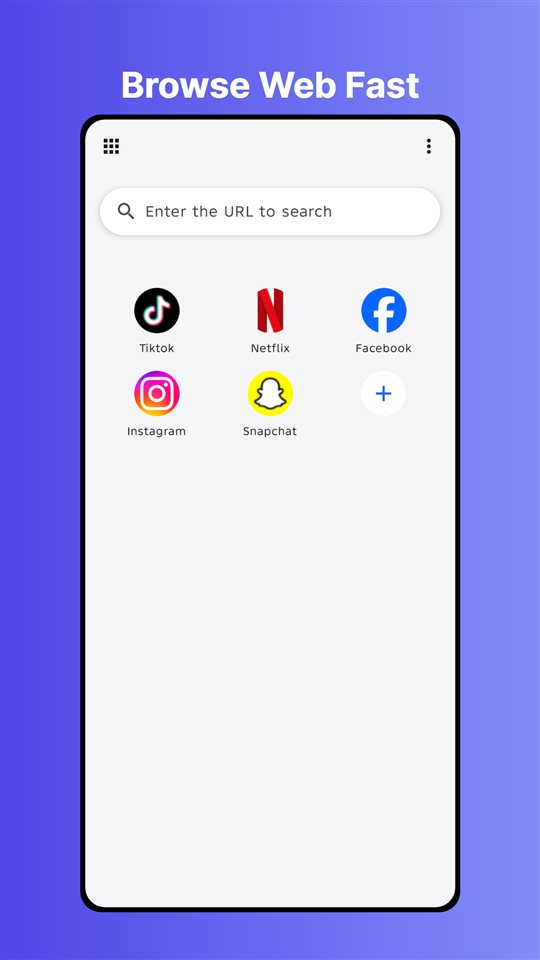
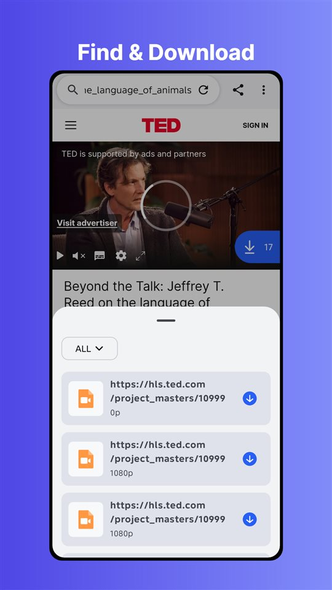
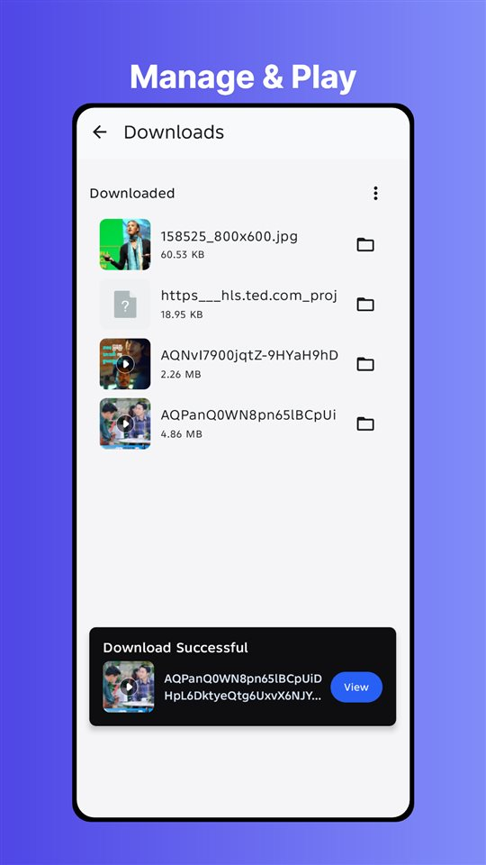

Pengunduh Video Gratis & Pelacak Media untuk Android
Temukan Konten.
Unduh Instan.
SnapSaver mendeteksi video dan gambar secara otomatis. Satu klik untuk menyimpan.
Fitur Inti
Dibuat untuk Mengunduh
Pelacak Cerdas
Mendeteksi media di halaman web. Mendukung M3U8, MP4.
Dukungan Luas
Kompatibel dengan ribuan situs web dan format video.
Manajer File
Manajer bawaan yang kuat. Ekstrak dan atur file.
Kecepatan 3x
Teknologi multi-thread meningkatkan kecepatan hingga 300%.
Tanpa Login
Tidak perlu registrasi. Mulai mengunduh secara instan.
Mode Penyamaran
Jelajah secara pribadi. Riwayat dihapus saat keluar.
Gratis & Bebas
Fitur utama 100% gratis selamanya.
20+ Bahasa
Dukungan asli untuk lebih dari 20 bahasa.
3 Langkah Mudah
Jelajah
Gunakan browser bawaan untuk mengunjungi situs favorit.
Deteksi Otomatis
Ikon unduhan menyala saat media terdeteksi.
Simpan
Ketuk untuk mengunduh. File disimpan di aplikasi.

Image 1Browse

Image 2
Image 3Enjoy
Format dan Protokol yang Didukung
Dari siaran langsung hingga galeri gambar, SnapSaver mengenali media yang membentuk web.
HLS / M3U8
Mendeteksi playlist m3u8 dari streaming langsung dan on-demand, mengunduh semua segmen, lalu menggabungkannya otomatis menjadi satu file MP4.
MP4, WebM & Audio
Mengunduh file media langsung seperti MP4, WebM, MP3, dan M4A dari situs mana pun yang Anda jelajahi.
Gambar & Galeri
Mendeteksi gambar secara massal di halaman dan menyimpan seluruh galeri ke perangkat dengan satu ketukan.
Siaran Langsung
Merekam siaran HLS langsung saat tayang dan menyimpan tayangan ulang untuk ditonton offline.
Apa Itu File M3U8 dan Bagaimana Cara Mengunduhnya?
M3U8 adalah format playlist dari HLS (HTTP Live Streaming), teknologi di balik sebagian besar situs video. Video bukan satu file utuh, melainkan ratusan segmen TS kecil, sehingga pengelola unduhan biasa tidak bisa mengambilnya.
SnapSaver mengatasinya secara otomatis. Sniffer bawaannya membaca playlist m3u8 saat Anda memutar video, mengunduh semua segmen dengan multi-thread, dan menggabungkannya menjadi file MP4 biasa yang bisa diputar di mana saja tanpa alat konversi.
Unduh video hanya untuk tontonan pribadi offline jika situs mengizinkan, dan hormati hak cipta kreator konten.
Pertanyaan Umum
Apakah gratis?
Ya. Versi Pro tersedia tanpa iklan.
Situs apa saja?
Kami mendukung protokol universal HLS (m3u8) dan MP4.
Butuh akun?
Tidak. Kami memprioritaskan privasi Anda.
Di mana unduhan saya disimpan?
Semua yang Anda unduh tersimpan di pengelola file bawaan SnapSaver. Dari sana Anda bisa memutar offline, mengganti nama, mengompres folder, atau mengekspor ke galeri dan aplikasi lain.
Bisakah mengunduh siaran langsung M3U8?
Bisa. SnapSaver mendeteksi playlist HLS langsung, mengunduh segmen secara real-time selama siaran, dan menggabungkannya menjadi MP4 saat rekaman dihentikan.
Apakah SnapSaver aman digunakan?
SnapSaver tidak memerlukan akun dan tidak mengunggah data penjelajahan Anda. Mode incognito menghapus riwayat, cookie, dan cache setiap kali keluar, tanpa jejak di perangkat.
Mengapa video di beberapa situs tidak terdeteksi?
Beberapa situs memakai enkripsi DRM atau pemutar khusus yang memblokir deteksi. Coba muat ulang halaman, putar video beberapa detik, atau perbarui ke versi terbaru SnapSaver.
Versi Android apa saja yang didukung?
SnapSaver berjalan di semua ponsel dan tablet Android modern. Unduh dari Google Play, atau gunakan APK langsung dari situs ini jika Play tidak tersedia di wilayah Anda.
Mengapa Memilih SnapSaver Video Downloader?
SnapSaver adalah alat utama untuk mengunduh konten streaming video dan media dengan mulus. Baik Anda berhadapan dengan aliran HLS/M3U8 kompleks atau file MP4 standar, pelacak pintar bawaan kami mendeteksinya seketika. Nikmati kecepatan unduhan tinggi tanpa perlu mendaftar.
Selain mengunduh, SnapSaver adalah browser privat berfitur lengkap. Pengelola file bawaannya menata video, musik, dan dokumen Anda dengan dukungan zip, dan akselerasi multi-thread membuat unduhan hingga tiga kali lebih cepat. Tanpa registrasi, tanpa iklan, tanpa pelacakan: buka halaman, putar video, lalu ketuk simpan.